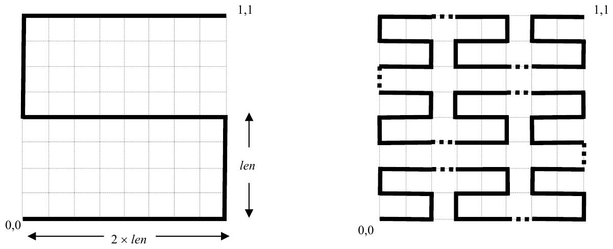

The 27th Annual ACM International Collegiate Programming Contest World Finals sponsored by IBM · Problem C
The latest research in reconfigurable multiprocessor chips focuses on the use of a single bus that winds around the chip. Processor components, which can be anywhere on the chip, are attached to connecting points on the bus so that they can communicate with each other.
Some research involves bus layout that uses recursively-defined “SZ” curves, also known as “S-shaped Peano curves.” Two examples of these curves are shown below. Each curve is drawn on the unit square. The order-1 curve, shown on the left, approximates the letter “S” and consists of line segments connecting the points (0,0), (1,0), (1,0.5), (0,0.5), (0,1), and (1,1) in order. Each horizontal line in an “S” or “Z” curve is twice as long as each vertical line. For the order-1 curve, the length of a vertical line, len, is 0.5.

The order-2 curve, shown on the right, contains 9 smaller copies of the order-1 curve (4 of which are reversed left to right to yield “Z” curves). These copies are connected by line segments of length len, shown as dotted lines. Since the width and height of the order-2 curve is 8 × len, and the curve is drawn on the unit square, len = 0.125 for the order-2 curve.
The order-3 curve contains 9 smaller copies of the order-2 curve (with 4 reversed left to right), connected by line segments, as described for the order-2 curve. Higher order curves are drawn in a similar manner. The connecting points to which processor components attach are evenly spaced every len units along the bus. The first connecting point is at (0,0) and the last is at (1,1). There are 9k connecting points along the order-k curve, and the total bus length is (9k–1) × len units.
You must write a program to determine the total distance that signals must travel between two processor components. Each component’s coordinates are given as an x, y pair, 0 ≤ x ≤ 1 and 0 ≤ y ≤ 1, where x is the distance from the left side of the chip, and y is the distance from the lower edge of the chip. Each component is attached to the closest connecting point by a straight line. If multiple connecting points are equidistant from a component, the one with the smallest x coordinate and smallest y coordinate is used. The total distance a signal must travel between two components is the sum of the length of the lines connecting the components to the bus, and the length of the bus between the two connecting points. For example, the distance between components located at (0.5, 0.25) and (1.0, 0.875) on a chip using the order-1 curve is 3.8750 units.
The input contains several cases. For each case, the input consists of an integer that gives the order of the SZ curve used as the bus (no larger than 8), and then four real numbers x1, y1, x2, y2 that give the coordinates of the processor components to be connected. While each processor component should actually be in a unique location not on the bus, your program must correctly handle all possible locations.
The last case in the input is followed by a single zero.
For each case, display the case number (starting with 1 for the first case) and the distance between the processor components when they are connected as described. Display the distance with 4 digits to the right of the decimal point.
Use the same format as that shown in the sample output shown below. Leave a blank line between the output lines for consecutive cases.
1 0.5 .25 1 .875 1 0 0 1 1 2 .3 .3 .7 .7 2 0 0 1 1 0
Case 1. Distance is 3.8750 Case 2. Distance is 4.0000 Case 3. Distance is 8.1414 Case 4. Distance is 10.0000